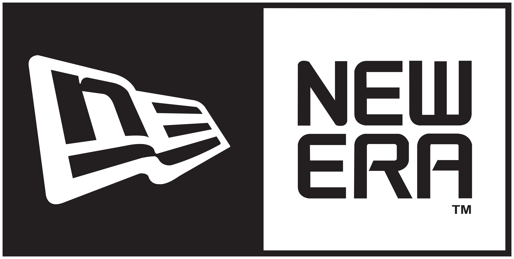
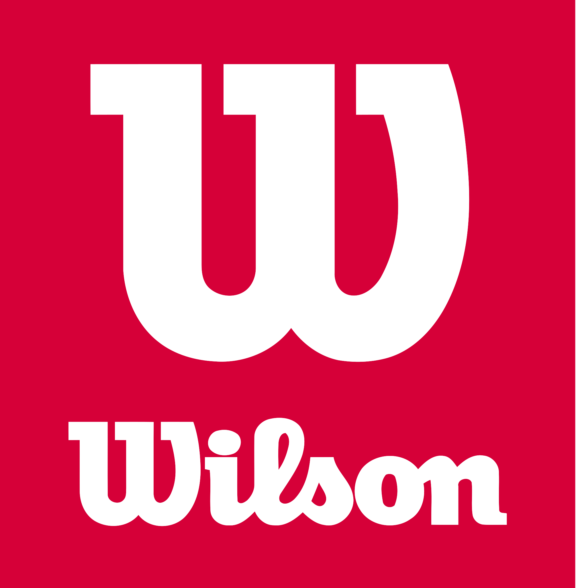
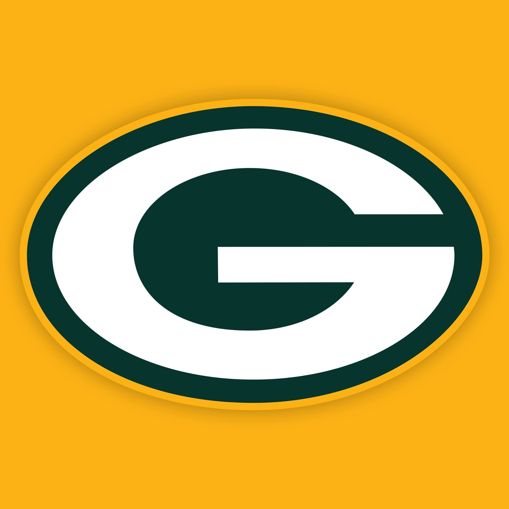
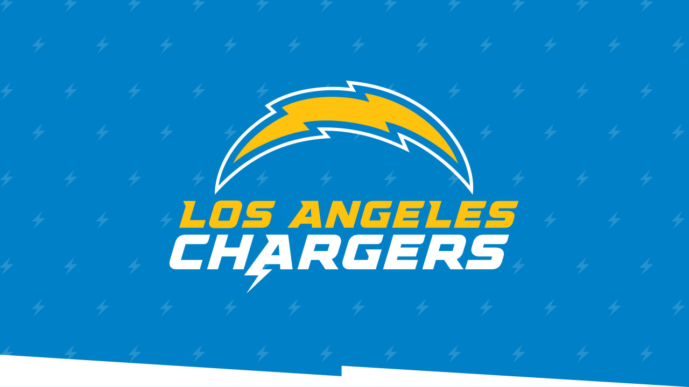

Sobre a loja
A loja Football Since - 1993, tem o intuito de trazer a liga NFL esportiva profissional de futebol americano dos Estados Unidos. Consiste de 32 times, divididos igualmente entre duas conferências: a National Football Conference (NFC) e a American Football Conference (AFC). A NFL é uma das quatro grandes ligas esportivas profissionais estadunidenses e é o principal expoente do futebol americano no mundo.
Sua temporada regular é jogada por dezessete semanas, de setembro a dezembro, com cada time jogando dezesseis partidas e tendo uma semana de folga. Após a conclusão da temporada regulamentar, seis times de cada conferência (quatro campeões de divisão e dois times de repescagem) avançam para os playoffs, em uma competição de morte súbita culminando na grande final, o Super Bowl, que normalmente é disputado no primeiro domingo de fevereiro e coloca frente a frente os campeões da NFC e da AFC.
- 
- 

- 
- 